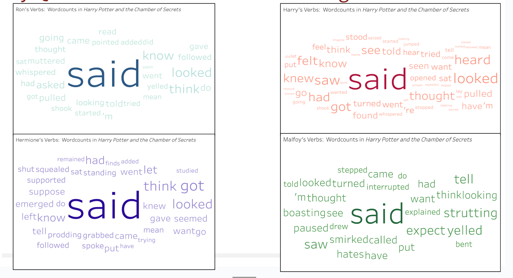
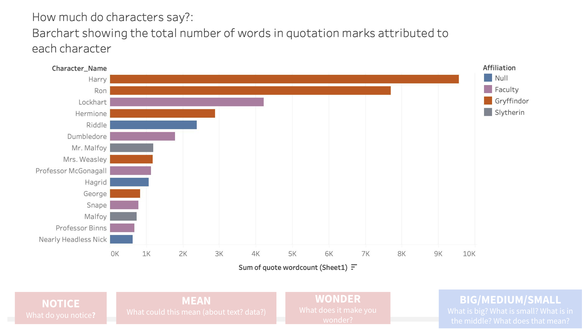
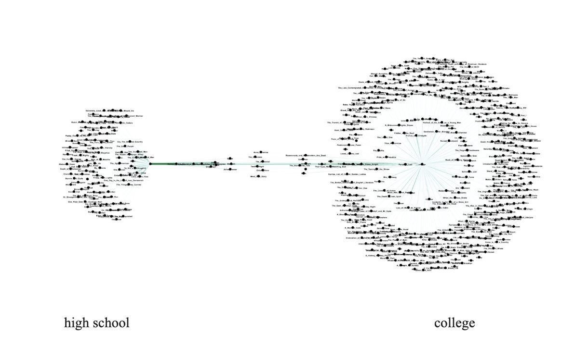
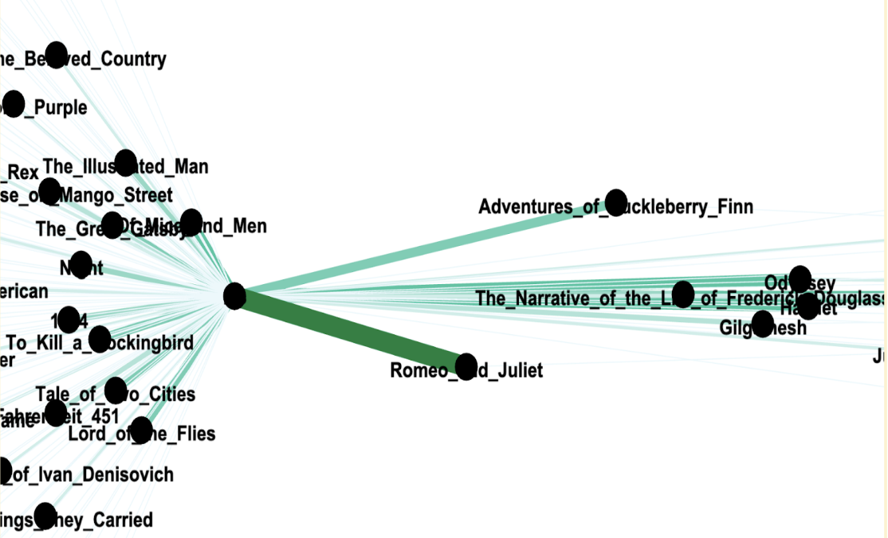

Summer 2024
Expanding English Language Arts
Project Lead: Sarah Levine
The goal of this project is to expand the way English Language Arts (ELA) is taught in U.S. high schools. Many ELA teachers want to expand their practice to prepare students for the kinds of literary and language engagement they might encounter in college or in their everyday, out-of-school lives. but they need knowledge, resources, and authority to do so. We want to provide some of those things by doing a content analysis of hundreds of high school ELA course descriptions and comparing those with college English course descriptions, asking: What subjects do those courses explore? What kinds of texts do they invite students to read? What kinds of skills do they demand? What kinds of products do they ask students to create? How do they represent the value of ELA?
Project Members
Project Member
Designation
Sarah Levine
Assistant Professor in the Graduate School of Education
Nichole Nomura
Lecturer of English
Elanna Mak
Undergraduate Researcher - Summer, 2024
Integrating Data Visualizations in ELA Literacy
This summer, under the guidance of Professor Sarah Levine and the Graduate School of Education team, my project, “Seeing Texts Differently,” explores how data visualizations can enhance the teaching of English Language Arts (ELA) literacy and data literacy in the classroom. This project is important because it has the potential to transform the way that English Language Arts are taught in the classroom. We generate tools like word clouds and bar graphs, and then investigate how teachers can use these visualizations to help students engage with and evaluate stories, authorial choices, and data.
My work has involved using GitHub to access existing coding frameworks and create data visualizations for a variety of new texts. The next phase involves bringing these visualizations into the classroom, potentially through a dedicated website for students or a tool specifically designed for teachers. At the beginning of August, my team presented this work in Redwood City to a group of Bay Area teachers and gathered feedback for how these visualizations can best support ELA literacy in the classroom!


In a second component of the project, we’re expanding the scope of ELA by examining trends in how English is represented in high school and post-secondary course descriptions and syllabi. We’ve analyzed what texts and writing products teachers expect students to engage with, exploring variations by state, geographical region, and institution type. This work involved collecting syllabi and identifying authors of hundreds of common texts. I also built a webscraper utilizing Selenium to more efficiently parse PDF’s and hone in on the most common novels in the classroom. I put all this data in a spreadsheet and used SQL to create a comprehensive map of the dataset.

